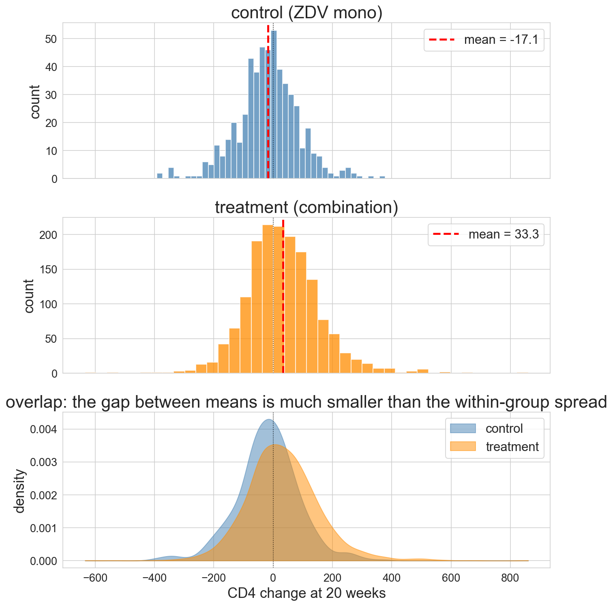
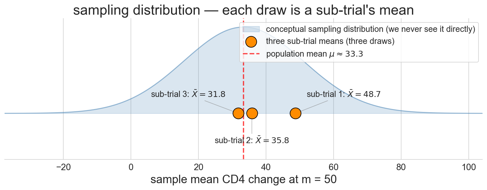
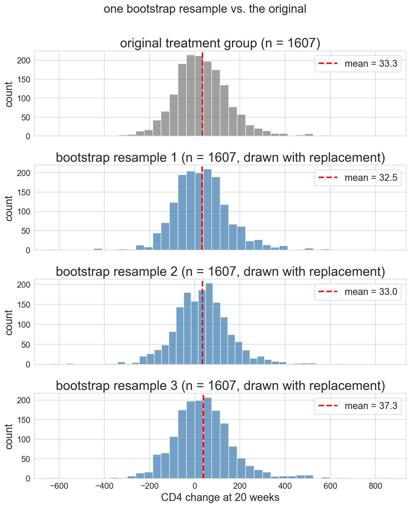
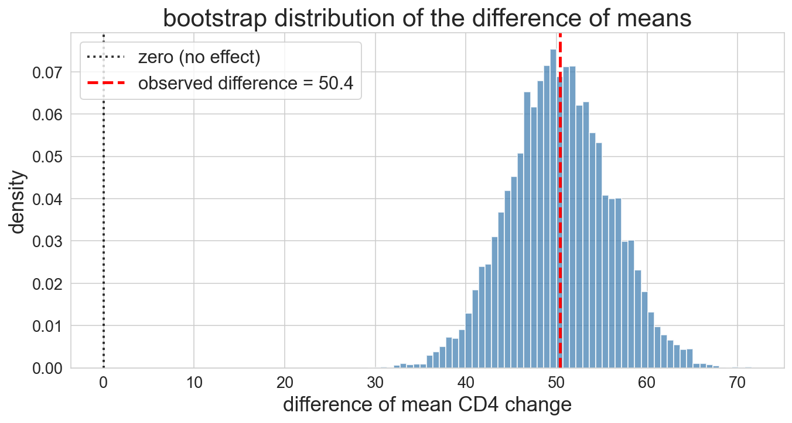
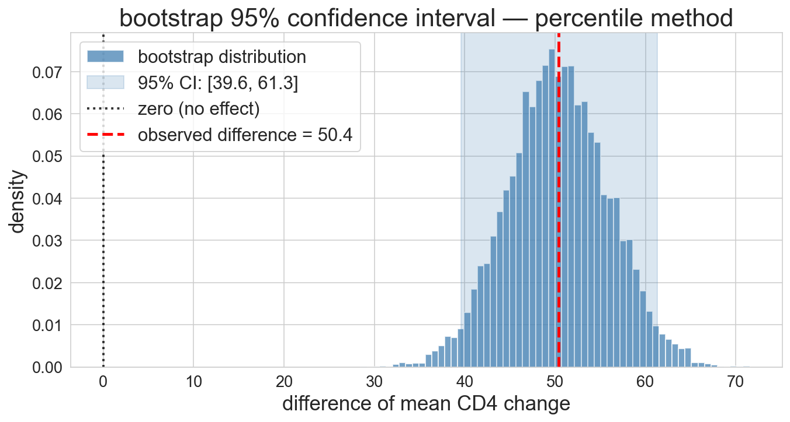
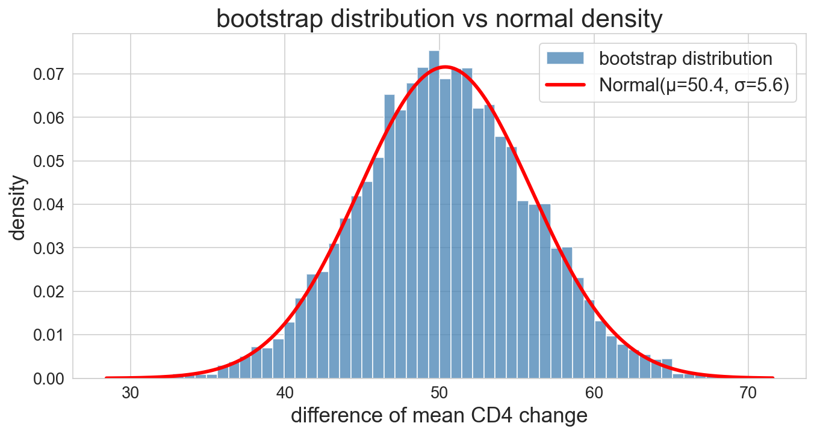
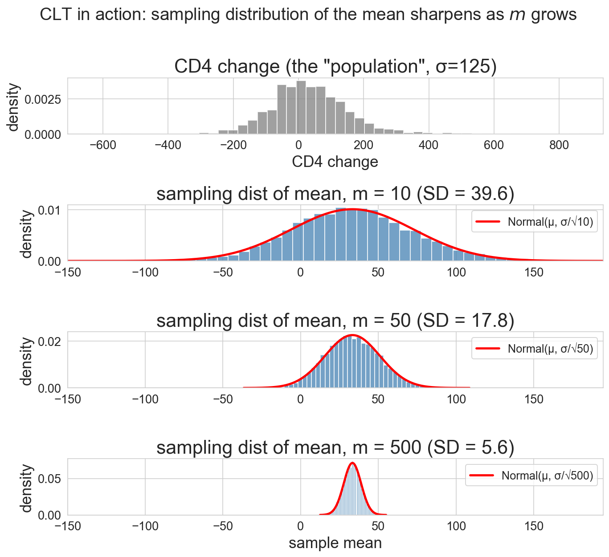
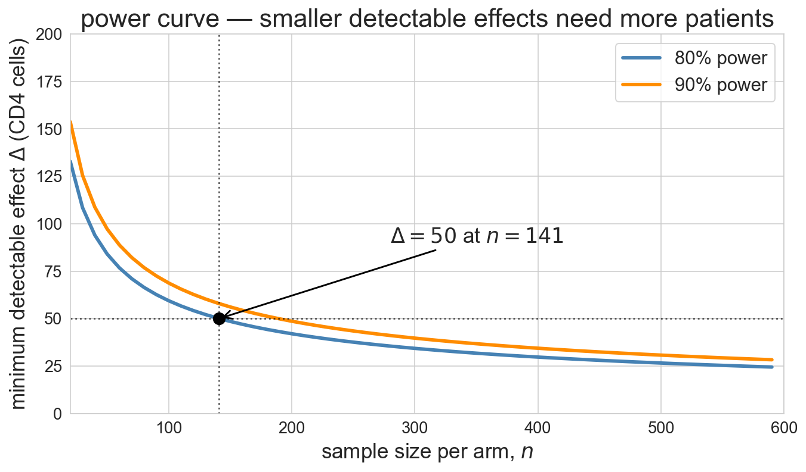
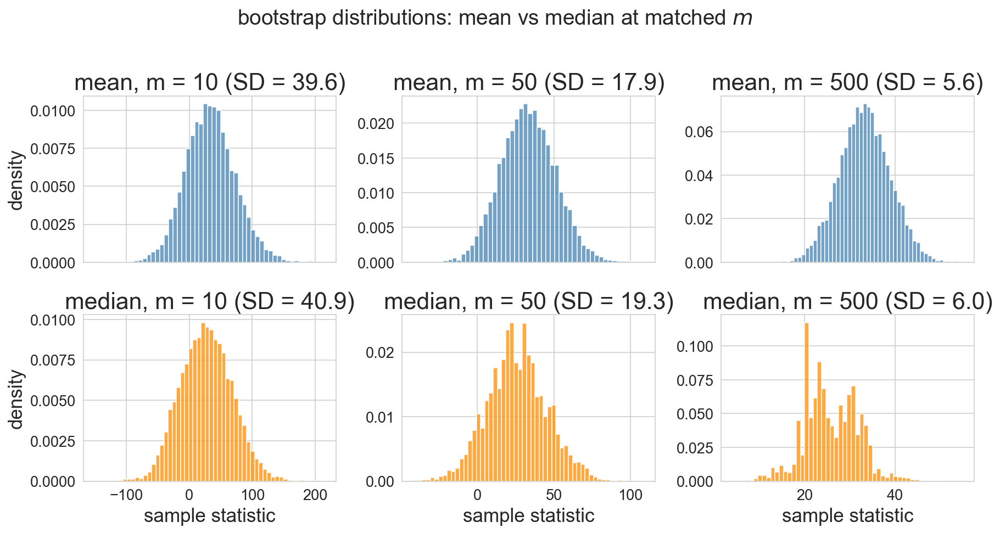
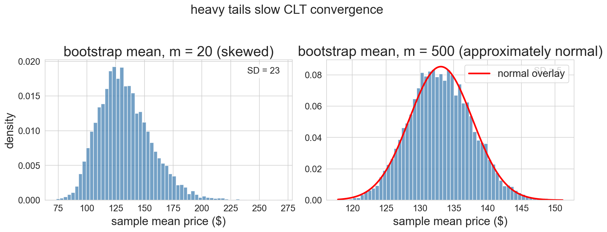

Lecture 8: Bootstrap and the Normal Approximation
MSE 125 — Applied Statistics
Wednesday, April 22, 2026
in the early 1990s, AIDS was the leading killer of Americans aged 25–44
the first drug worked — until it stopped working
what next?
logistics
- HW 1: grades almost ready. we’ll trial AI grader + feedback for future assignments
- HW 2: due this Friday 11:59pm
- project proposal: due Fri May 1. sign-up to chat with TAs before then — slots open tomorrow. we’ll post project ideas shortly.
today
- the question: can we trust one number from one trial?
- the bootstrap: resample the data to see what else we might have gotten
- the surprise: the answer looks normal
- the payoff: CLT gives a one-line formula — and warns when it fails
ACTG 175 — the trial
- enrolled 1991–1993, published 1996
- NIH AIDS Clinical Trials Group
- 2,139 adults with HIV
- four treatment arms — combination therapy vs AZT alone
- outcome: change in CD4 count at 20 weeks
CD4 = the white blood cells HIV destroys
rising count \Rightarrow immune system recovering
Hammer et al., NEJM 1996
the data
observed difference of means = 33.3 - (-17.1) = \mathbf{50.4} CD4 cells
treatment gains ≈ 33 cells — control loses ≈ 17 — AZT alone is failing these patients
estimation — the game we’ve been playing
estimand, estimator, estimate
- estimand — the fixed-but-unknown population quantity
- estimator — the procedure that maps data to a guess
- estimate — the specific number produced by one dataset
you’ve been playing this game since week 1:
| lec | estimand | estimator |
|---|---|---|
| 4 | pop’n mean \mu | sample mean \bar X |
| 5 | pop’n coefficients \beta | OLS \hat\beta |
| 7 | pop’n accuracy | test-set accuracy |
today — estimand \mu_T - \mu_C, estimator \bar X_T - \bar X_C, estimate = \mathbf{50.4} CD4 cells
new question: how precise is the estimate?
the population distribution
population distribution \mathcal{X}
the distribution of a single observation drawn from the population
- X_i \sim \mathcal{X} — each outcome is one draw
- parameters: mean \mu, SD \sigma — fixed, unknown
- any shape — skewed, bounded, multimodal
ACTG 175 has two populations, two distributions:
- \mathcal{X}_T — CD4 change across all combination-therapy-eligible adults
- \mathcal{X}_C — CD4 change across all AZT-only patients
the 1607 treatment patients and 532 controls in our trial are samples from \mathcal{X}_T and \mathcal{X}_C
law of large numbers — plug in the sample
LLN: as n \to \infty, sample statistics converge to population parameters
\bar X_n \;\longrightarrow\; \mu, \qquad s_n \;\longrightarrow\; \sigma
you proved this in MS&E 120 — now we’ll use it
so plug in the sample to estimate \mathcal{X}’s parameters:
\hat\mu = \bar X_n, \qquad \hat\sigma = s_n
ACTG treatment group: \hat\mu_T = \bar X_T = 33.3 CD4 cells — our estimate of \mu_T
- LLN — \bar X_n \to \mu, eventually
- CLT (today) — how fast, and in what shape
two population means — the estimands
population mean
- the average CD4 change across every HIV-positive adult eligible for the trial
- under a given treatment: one mean under combination therapy, one under AZT alone
- each fixed but unknown — we estimate both from the sample
the difference of the two means is often what we care about
under randomization, that difference reads as the drug’s causal effect
but the spread is enormous

red dashed = group mean
the overlap is bigger than the gap
what if we only had 50 patients?
sub-trial 1: mean = 48.7
sub-trial 2: mean = 35.8
sub-trial 3: mean = 31.8three sub-trials, three different answers — sampling variation in action
sampling distribution
sampling distribution
the distribution of values a statistic would take if we could repeat the study many times, each time with a fresh sample from the population
the three sub-trials above are three draws from this distribution

we never see it directly — we have one sample, not many
the sampling distribution is what we want — but we only have one sample
how do we estimate it?
- A. split our sample into sub-samples and study their variation
- B. run the whole study again — many times
- C. use our one sample cleverly to simulate “alternative studies”
- D. we can’t — there’s no principled way
- 30 seconds — commit to A, B, C, or D
- 1 minute — defend your answer to a neighbor
resample the data you have
the bootstrap — core idea
our one sample is the best picture we have of the population
treat it as if it were the population
draw new samples from it — with replacement
sampling with replacement — a mini trial
- some patients appear twice
- some are missing
that’s “with replacement”
each resample is a plausible “alternative trial we might have run”
the bootstrap recipe
- treat the observed sample as the population
- draw a resample — same size, with replacement
- compute the statistic on the resample — mean, median, slope, AUC, …
- repeat steps 2–3 B times — typically B = 10{,}000
- the spread of those B values estimates SE; the middle 95% is a 95% CI
works for any statistic — that’s the power
what a resample looks like

- original on top
- three resamples below
- same size, slightly different composition, slightly different mean
bootstrap the difference of means
np.random.choice(..., replace=True) = one bootstrap resample; list comprehension runs it B times and stacks into an array
B = number of bootstrap replications (here, 10,000) — a separate knob from the dataset size n
boot.mean() = 50.4 ← centered at observed difference
boot.std() = 5.6 ← ≈ standard error of the estimatorthe bootstrap distribution

10,000 resamples mapping out the shape of plausible values
our third distribution today — after \mathcal{X} and the sampling distribution of \bar X_n
today’s estimand, estimator, estimate
- estimand — \mu_T - \mu_C (population difference of CD4 means)
- estimator — \bar X_T - \bar X_C (difference of sample means)
- estimate — 50.4 CD4 cells (one number from one dataset)
the estimate changes every time you draw a new sample
the estimand stays fixed
the bootstrap just gave us 10,000 estimates — mapping out that variation
confidence interval — percentile method
95% confidence interval
intuition: a range of plausible values for the estimand
formal: built by a procedure where 95% of intervals contain the estimand across repeated studies
percentile method: the 2.5th to 97.5th percentile of the bootstrap distribution
⚠ not “estimand has a 95% chance of being in [a, b]” — estimand is fixed, CI varies across studies
- bootstrap mean ≈ 50
- bootstrap SD ≈ 5.6
Q: does the 95% CI include zero?
what would it mean for the drug if the CI did include zero?
- 1 minute — predict yes/no and say why
debrief: what’s the rough CI width? hint — ≈ ±2 SD
and the CI is…

95% CI: [39.6, 61.3]
entirely above zero — the drug really works
what a CI does and doesn’t cover
does: sampling uncertainty — different patients showing up
doesn’t: systematic shifts — seasonality, a new competitor, a marketing campaign mid-trial
before trusting a CI for a decision, ask: is the uncertainty that matters the kind the bootstrap captures?
it looks normal
the bootstrap distribution looks… bell-shaped?

red curve = Normal(μ, σ) with bootstrap mean and SD — nearly perfect fit
Central Limit Theorem — informal
if you average many independent draws from a population distribution \mathcal{X}, the result is approximately normal — for large enough sample size
the sample mean is bell-shaped even if \mathcal{X} isn’t
the bootstrap distribution is a sampling distribution of a sample mean — so: bell-shaped
Central Limit Theorem — formal
if X_1, \ldots, X_n \overset{\text{iid}}{\sim} \mathcal{X} with finite mean \mu and finite variance \sigma^2, then for large n:
\bar{X}_n \;\sim\; \text{Normal}\!\left(\mu, \frac{\sigma}{n^{1/2}}\right) \quad \text{(approximately, for large $n$)}
\sim = “distributed as”; the parenthetical keeps us honest that the match is asymptotic
\mathcal{X} does not need to be normal — any population distribution with finite moments works
CLT — what iid buys us, and how fast
iid plausible for ACTG? patients are different people (independence); sampled from the same \mathcal{X} (identical distribution)
LLN vs CLT: LLN says \bar X_n converges to \mu; CLT says how fast (n^{-1/2}) and in what shape (normal)
the CLT is the upgrade from this morning’s LLN plug-in
earlier: three sub-trials of 50 patients gave estimates 49, 36, 32
at 500 patients per sub-trial — 10× larger — how much would the three estimates vary?
- A. about the same
- B. about 3× less — shrinks like 10^{1/2}
- C. about 10× less — shrinks linearly
- D. about 100× less — shrinks like n^2
- 30 seconds — commit to A, B, C, or D
- 1 minute — defend your answer to a neighbor
the CLT in action — watch the bell sharpen
notation in one place:
- n_T, n_C — actual trial group sizes (1607, 532)
- m — hypothetical sample size we vary across demos
- B — outer-loop count (here 10,000) — CLT scales with m, not B

draw samples of size m from CD4 data
four panels: population, m=10, m=50, m=500
standard error — the width of the sampling distribution
CLT \Rightarrow \text{SE}(\bar X) = \dfrac{\sigma}{m^{1/2}}
in practice: we don’t know \sigma — substitute the sample SD s
\widehat{\text{SE}}(\bar X) = \dfrac{s}{m^{1/2}}
| m | SE from formula | SE from simulation |
|---|---|---|
| 10 | 39.6 | 39.6 |
| 50 | 17.7 | 17.8 |
| 500 | 5.6 | 5.6 |
formula and simulation agree — CLT isn’t just a theorem, it’s a tool
the normal approximation
if the bootstrap distribution is normal, we don’t need 10,000 resamples
\hat{\theta} \pm 1.96 \cdot \widehat{\text{SE}}
for one mean: \widehat{\text{SE}} = s / n^{1/2}
for a difference: variances add (groups are independent, thanks to randomization)
\widehat{\text{SE}} = \left(\frac{s_T^2}{n_T} + \frac{s_C^2}{n_C}\right)^{1/2}
bootstrap vs formula — head to head
| approach | \widehat{\text{SE}} | 95% CI |
|---|---|---|
| bootstrap, 10,000 resamples | 5.6 | [39.6, 61.3] |
| normal formula | 5.6 | [39.6, 61.2] |
both columns estimate the true SE — write \widehat{\text{SE}}
they agree — so why do we teach both?
when to reach for the normal approximation
advantages:
- analytical planning — “how many patients to detect a 50-cell effect?” needs the formula, not resampling
- composable — combine SEs across studies, e.g. meta-analysis
- speed + less code — one line vs 10,000 resamples
the real reason to teach the formula: the questions it answers that the bootstrap can’t
analytical planning — how big a trial?

before ACTG 175 enrolled a patient, NIH had to answer: how many patients?
- target detectable effect: \Delta = 50 CD4 cells
- illustrative SD guess from pilot data: \sigma \approx 150 per arm
- 80% power
- significance \alpha = 0.05
z_{\alpha/2} = 1.96 (two-sided 5% critical value), z_\beta = 0.84 (80th percentile of N(0,1))
n \;=\; \frac{2\sigma^2 \,(z_{\alpha/2} + z_\beta)^2}{\Delta^2} \;=\; \frac{2 \cdot 150^2 \cdot (1.96 + 0.84)^2}{50^2} \;\approx\; 141 \text{ per arm}
formula assumes equal group sizes — trial design choice
bootstrap can’t do this — no data yet to resample
for each statistic, predict: does the formula work, marginal, or fail?
- works — formula CI matches bootstrap
- marginal — formula CI slightly off in shape or coverage
- fails — formula CI badly wrong, or no formula exists
then classify:
- mean of 500 Airbnb prices
- median of 500 Airbnb prices
- max of 500 Airbnb prices
- mean of 20 Airbnb prices
- 2 minutes — commit to works / marginal / fails for each of the four
- share with your neighbor
failure mode 1 — the median
CLT applies to means, not medians

median’s bootstrap distribution is lumpier, wider, no simple closed-form SE
failure mode 2 — heavy tails at small m

m=20 with right-skewed prices: bootstrap itself is skewed — normal CI would lie
m=500: CLT has kicked in
caveat — bootstrap isn’t magic either
- tiny n: observed sample is a bad picture of the population — bootstrap inherits the flaw
- extreme quantiles — min, max, 99th percentile — data carries little info in the tails
- rule of thumb:
- m \geq 30 for mild skew
- m \geq hundreds for heavy tails
when the bootstrap distribution looks wrong, the CI is a warning — not an answer
you’re the PM — should you ship the new checkout?
the same tools scale beyond clinical trials — here’s one you’ll face in industry
A/B test: half your users see the old checkout, half see the new
the results are in:
- lift: +2.1% sign-ups
- 95% bootstrap CI: [+0.3%, +3.9%]
- new flow: more complex, adds 2 external dependencies
ship it? defend:
- what the CI shows — and what it doesn’t catch
- cost and maintainability: is +2% worth +2 dependencies?
- is more data worth waiting for?
- 4 minutes — commit to ship / wait / don’t ship
- defend in pairs using all three considerations
one dataset, one statistic, quantified uncertainty
summary
- bootstrap = resample with replacement to approximate the sampling distribution
- CLT = why bootstrap distributions of means look normal
- normal approximation = \hat{\theta} \pm 1.96 \cdot \text{SE} when CLT applies — fast, composable, powers trial design
- reach for bootstrap when the statistic isn’t a mean, tails are heavy, or n is small
- neither tool is magic: extreme tails, tiny samples — no method conjures missing information
next time
- Ch 9: permutation tests — bootstrap quantified the estimate, permutation asks: could the effect be zero?
- Ch 10: the hypothesis-testing framework formalizes both
- Ch 12: bootstrap for regression coefficients
one-minute feedback
- what was the most useful thing you learned today?
- what was the most confusing?